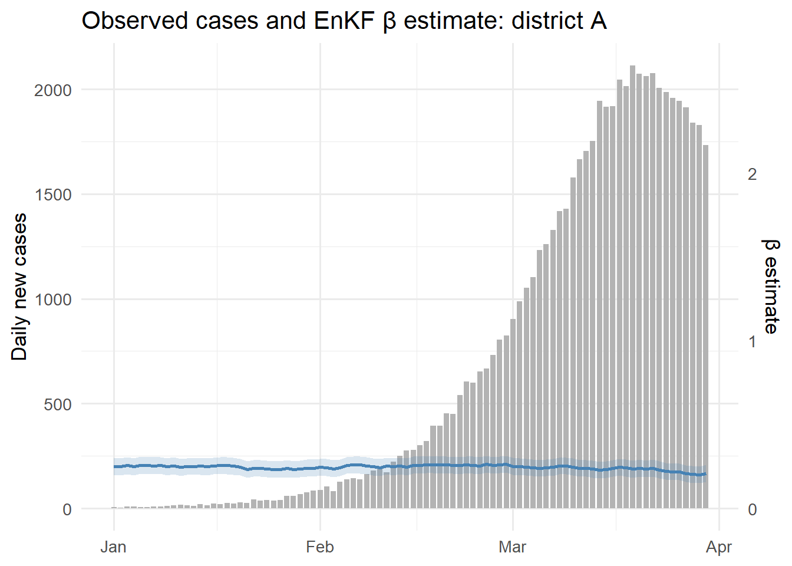
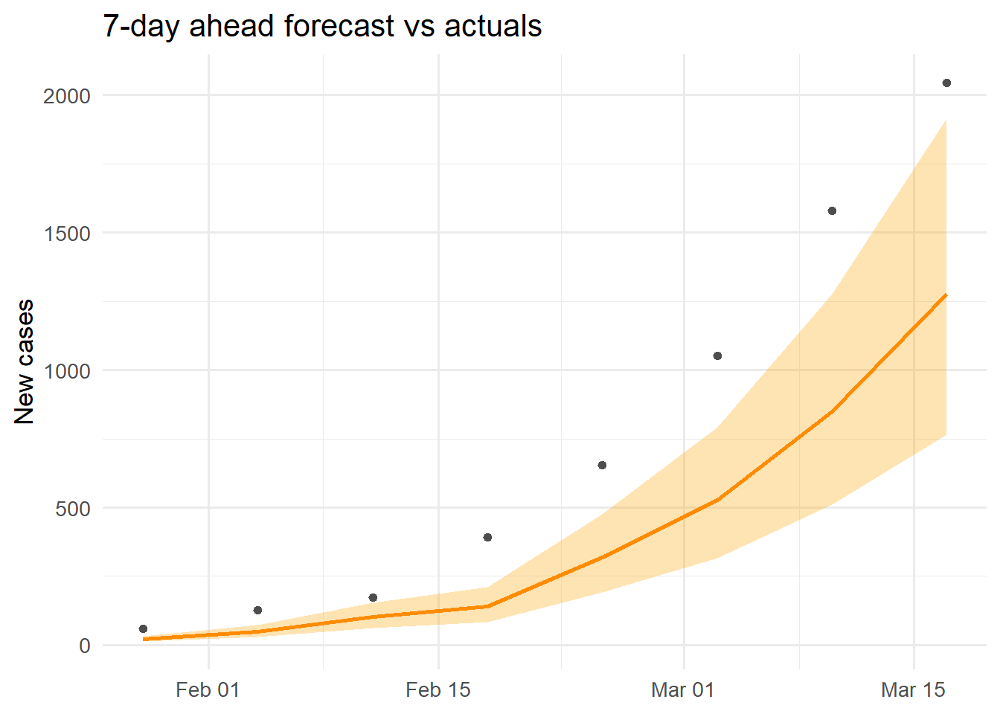
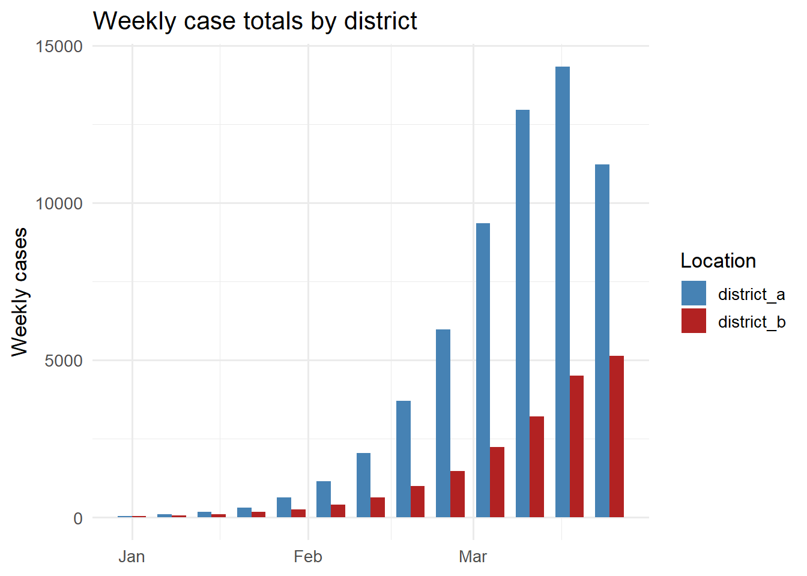

library(ggplot2)
library(dplyr)
library(tidyr)Time-Series Data Storage with TimescaleDB
Persisting simulation outputs, observations, and model states in a PostgreSQL extension built for time-series workloads. Post 6 in the Building Digital Twin Systems series.
digital twin
database
TimescaleDB
PostgreSQL
R
data engineering
1 Why simulation data needs a database
After Post 4 (EnKF) and Post 5 (GP surrogate), your digital twin produces several types of time-stamped output every day:
- Observations: daily case counts from surveillance
- State estimates: EnKF posterior for \(S\), \(E\), \(I\), \(R\), \(\beta\)
- Forecasts: 14-day forward projections with uncertainty
- Scenario runs: counterfactuals under alternative interventions
Saving these to CSV files works for one outbreak. It breaks when you need to:
- Query “all estimates for district X between March and June”
- Join surveillance data with model output by timestamp
- Write to the database from a Python API while reading from an R dashboard
- Retain 3 years of daily forecasts without running out of disk or memory
A relational database handles all of this. TimescaleDB (1) is a PostgreSQL (2) extension that adds time-series optimisations — automatic partitioning by time, efficient time-range queries, and continuous aggregates — while keeping full SQL compatibility.
2 Core concepts
2.1 PostgreSQL refresher
PostgreSQL is a relational database: data lives in tables (rows and columns), queries use SQL, and the database enforces data types and constraints. The key operations are:
-- Create a table
CREATE TABLE observations (
time TIMESTAMPTZ NOT NULL,
location TEXT NOT NULL,
cases INTEGER NOT NULL
);
-- Insert a row
INSERT INTO observations VALUES ('2024-03-01', 'district_a', 42);
-- Query with a time filter
SELECT * FROM observations
WHERE time >= '2024-03-01'
AND time < '2024-04-01'
ORDER BY time;2.2 What TimescaleDB adds
TimescaleDB converts a regular table into a hypertable with one command:
SELECT create_hypertable('observations', 'time');Under the hood it partitions the table into chunks by time interval (default: 7 days). This means:
- Time-range queries touch only the relevant chunks — much faster than scanning the full table
- Old chunks can be compressed or moved to cheaper storage automatically
- Chunk pruning is transparent: you write the same SQL
3 Schema design for a digital twin
A practical schema for an epidemic digital twin has four tables:
-- Raw surveillance data
CREATE TABLE observations (
time TIMESTAMPTZ NOT NULL,
location_id TEXT NOT NULL,
new_cases INTEGER NOT NULL,
source TEXT
);
SELECT create_hypertable('observations', 'time');
-- EnKF posterior state estimates
CREATE TABLE model_states (
time TIMESTAMPTZ NOT NULL,
location_id TEXT NOT NULL,
run_id UUID NOT NULL,
S_median REAL,
E_median REAL,
I_median REAL,
R_median REAL,
beta_median REAL,
beta_lo95 REAL,
beta_hi95 REAL
);
SELECT create_hypertable('model_states', 'time');
-- Short-term forecasts
CREATE TABLE forecasts (
issued_at TIMESTAMPTZ NOT NULL, -- when the forecast was made
target_time TIMESTAMPTZ NOT NULL, -- what time it predicts
location_id TEXT NOT NULL,
horizon_days SMALLINT NOT NULL,
cases_median REAL,
cases_lo95 REAL,
cases_hi95 REAL
);
SELECT create_hypertable('forecasts', 'issued_at');
-- Scenario / counterfactual runs
CREATE TABLE scenarios (
run_id UUID PRIMARY KEY DEFAULT gen_random_uuid(),
created_at TIMESTAMPTZ NOT NULL DEFAULT NOW(),
description TEXT,
parameters JSONB -- flexible key-value store for run config
);The JSONB column on scenarios stores arbitrary key-value metadata (beta, gamma, intervention timing) without requiring a schema change when parameters evolve.
4 Simulating the workflow in R
We do not need a live database to work through the patterns — we can simulate the full workflow using R data frames with the same column structure. This lets you develop and test logic locally before wiring up a real TimescaleDB instance.
4.1 Generating synthetic data
set.seed(2024)
# Simulate 90 days of observations for two locations
n_days <- 90
dates <- seq(as.Date("2024-01-01"), by = "day", length.out = n_days)
# SEIR peak parameters per location
make_obs <- function(beta, seed_val) {
set.seed(seed_val)
N <- 100000; S <- N - 50; E <- 30; I <- 20; R <- 0
sigma <- 1/5; gamma <- 1/7; out <- numeric(n_days)
for (d in seq_len(n_days)) {
new_e <- beta * S * I / N
new_i <- sigma * E
new_r <- gamma * I
S <- S - new_e; E <- E + new_e - new_i
I <- I + new_i - new_r; R <- R + new_r
out[d] <- rpois(1, max(1, new_i))
}
out
}
obs_a <- make_obs(0.35, 101)
obs_b <- make_obs(0.28, 202)
# "observations" table
df_obs <- data.frame(
time = rep(dates, 2),
location_id = rep(c("district_a", "district_b"), each = n_days),
new_cases = c(obs_a, obs_b),
source = "surveillance"
)4.2 Simulating EnKF posterior storage
# Simulate what the EnKF would write to model_states
# (using a simple running mean + noise for illustration)
make_states <- function(obs_vec, beta_true) {
n <- length(obs_vec)
beta_est <- cumsum(c(0.25, rnorm(n - 1, 0, 0.005)))
beta_est <- pmin(pmax(beta_est, 0.1), 0.6)
I_est <- stats::filter(obs_vec, rep(1/7, 7), circular = TRUE)
data.frame(
beta_median = beta_est,
beta_lo95 = beta_est - 0.05,
beta_hi95 = beta_est + 0.05,
I_median = as.numeric(I_est)
)
}
states_a <- make_states(obs_a, 0.35)
states_b <- make_states(obs_b, 0.28)
df_states <- data.frame(
time = rep(dates, 2),
location_id = rep(c("district_a", "district_b"), each = n_days),
run_id = "run-2024-01-01",
rbind(states_a, states_b)
)4.3 Generating forecasts
# Simple 14-day ahead forecast issued every 7 days
issue_days <- seq(21, n_days - 14, by = 7)
df_fcst <- do.call(rbind, lapply(issue_days, function(d) {
base <- df_obs$new_cases[df_obs$location_id == "district_a"][d]
growth <- 0.97 # slight decline
do.call(rbind, lapply(1:14, function(h) {
mu <- base * growth^h
data.frame(
issued_at = dates[d],
target_time = dates[d + h],
location_id = "district_a",
horizon_days = h,
cases_median = round(mu),
cases_lo95 = round(mu * 0.6),
cases_hi95 = round(mu * 1.5)
)
}))
}))5 Querying patterns in SQL and R
The value of a database is its query language. Here are the four most common patterns for a digital twin dashboard, shown as equivalent R dplyr operations (3) alongside their SQL counterparts.
5.1 Pattern 1: time-range filter
-- SQL
SELECT time, new_cases
FROM observations
WHERE location_id = 'district_a'
AND time BETWEEN '2024-02-01' AND '2024-03-31';df_obs |>
filter(location_id == "district_a",
time >= as.Date("2024-02-01"),
time <= as.Date("2024-03-31")) |>
select(time, new_cases) |>
head(5) time new_cases
1 2024-02-01 88
2 2024-02-02 103
3 2024-02-03 81
4 2024-02-04 128
5 2024-02-05 1395.2 Pattern 2: join observations with model state
-- SQL
SELECT o.time, o.new_cases, s.beta_median, s.I_median
FROM observations o
JOIN model_states s
ON o.time = s.time AND o.location_id = s.location_id
WHERE o.location_id = 'district_a';joined <- df_obs |>
filter(location_id == "district_a") |>
inner_join(
df_states |> filter(location_id == "district_a"),
by = c("time", "location_id")
)
ggplot(joined, aes(x = time)) +
geom_col(aes(y = new_cases), fill = "grey70", width = 0.8) +
geom_line(aes(y = beta_median * 800), colour = "steelblue",
linewidth = 1) +
geom_ribbon(aes(ymin = beta_lo95 * 800, ymax = beta_hi95 * 800),
fill = "steelblue", alpha = 0.2) +
scale_y_continuous(
name = "Daily new cases",
sec.axis = sec_axis(~ . / 800, name = "β estimate")
) +
labs(x = NULL, title = "Observed cases and EnKF β estimate: district A") +
theme_minimal(base_size = 13)
5.3 Pattern 3: forecast vs actuals (calibration)
-- SQL: compare 7-day ahead forecasts to what actually happened
SELECT f.issued_at, f.target_time,
f.cases_median, f.cases_lo95, f.cases_hi95,
o.new_cases AS actual
FROM forecasts f
JOIN observations o
ON f.target_time = o.time AND f.location_id = o.location_id
WHERE f.location_id = 'district_a'
AND f.horizon_days = 7;cal <- df_fcst |>
filter(horizon_days == 7) |>
inner_join(
df_obs |> filter(location_id == "district_a") |>
rename(actual = new_cases),
by = c("target_time" = "time", "location_id")
)
ggplot(cal, aes(x = target_time)) +
geom_ribbon(aes(ymin = cases_lo95, ymax = cases_hi95),
fill = "orange", alpha = 0.3) +
geom_line(aes(y = cases_median), colour = "darkorange", linewidth = 1) +
geom_point(aes(y = actual), colour = "grey30", size = 1.5) +
labs(x = NULL, y = "New cases",
title = "7-day ahead forecast vs actuals") +
theme_minimal(base_size = 13)
5.4 Pattern 4: TimescaleDB continuous aggregate (weekly totals)
In TimescaleDB, continuous aggregates pre-compute summaries and update incrementally:
-- Create a weekly aggregate (runs automatically as data arrives)
CREATE MATERIALIZED VIEW weekly_cases
WITH (timescaledb.continuous) AS
SELECT time_bucket('7 days', time) AS week,
location_id,
SUM(new_cases) AS total_cases,
AVG(new_cases) AS avg_daily
FROM observations
GROUP BY week, location_id;
-- Query it like a regular table
SELECT * FROM weekly_cases
WHERE week >= '2024-02-01'
ORDER BY week, location_id;The R equivalent for local development:
df_obs |>
mutate(week = as.Date(cut(time, "week"))) |>
group_by(week, location_id) |>
summarise(total_cases = sum(new_cases), .groups = "drop") |>
ggplot(aes(x = week, y = total_cases, fill = location_id)) +
geom_col(position = "dodge", width = 5) +
scale_fill_manual(values = c(district_a = "steelblue",
district_b = "firebrick"),
name = "Location") +
labs(x = NULL, y = "Weekly cases",
title = "Weekly case totals by district") +
theme_minimal(base_size = 13)
6 Connecting from R and Python
In a deployed system, both the EnKF runner (R) and the dashboard (Python) connect to the same TimescaleDB instance using standard database drivers.
From R using the DBI and RPostgres packages:
library(DBI)
library(RPostgres)
con <- dbConnect(
Postgres(),
host = "localhost",
port = 5432,
dbname = "dtdb",
user = Sys.getenv("DB_USER"),
password = Sys.getenv("DB_PASSWORD")
)
# Write EnKF output
dbWriteTable(con, "model_states", df_states, append = TRUE)
# Read for dashboard
df <- dbGetQuery(con, "
SELECT time, beta_median, beta_lo95, beta_hi95
FROM model_states
WHERE location_id = 'district_a'
ORDER BY time DESC
LIMIT 30
")
dbDisconnect(con)From Python using psycopg2 or SQLAlchemy:
import psycopg2
import pandas as pd
conn = psycopg2.connect(
host="localhost", dbname="dtdb",
user=os.environ["DB_USER"],
password=os.environ["DB_PASSWORD"]
)
df = pd.read_sql("""
SELECT time, new_cases
FROM observations
WHERE location_id = %s
ORDER BY time
""", conn, params=("district_a",))Using Sys.getenv() / os.environ for credentials keeps passwords out of code and out of git.
7 Running TimescaleDB locally with Docker
The Docker Compose file from Post 3 already included a TimescaleDB service:
db:
image: timescale/timescaledb:latest-pg16
environment:
POSTGRES_USER: dtuser
POSTGRES_PASSWORD: secret
POSTGRES_DB: dtdb
ports:
- "5432:5432"
volumes:
- pgdata:/var/lib/postgresql/data
healthcheck:
test: ["CMD-SHELL", "pg_isready -U dtuser -d dtdb"]
interval: 5s
retries: 10After docker compose up, connect with psql -h localhost -U dtuser -d dtdb and run the schema creation SQL above. The data volume pgdata persists the database across container restarts.
8 Design rules for production
Choose the right time column. issued_at on forecasts (when the forecast was made) versus target_time (what it predicts) serve different queries. Store both — issued_at for hypertable partitioning, target_time for calibration joins.
Index location and run IDs. Add CREATE INDEX ON model_states (location_id, time DESC) so per-location queries skip unneeded chunks.
Compress old chunks. TimescaleDB’s native compression can reduce storage by 90% for old time ranges: SELECT add_compression_policy('observations', INTERVAL '30 days').
Use connection pooling. Open a new database connection per API request is expensive. Use PgBouncer or SQLAlchemy’s connection pool in production.
9 References
1.
Freedman M, Pedreira G, Kumar A, Morozov D. TimescaleDB: Time-series data management in PostgreSQL. In: Proceedings of the VLDB endowment. 2019. p. 2182–3. doi:10.14778/3352063.3352133
2.
Momjian B. PostgreSQL: Introduction and concepts. Boston, MA: Addison-Wesley; 2001.
3.
Wickham H, Averick M, Bryan J, Chang W, McGowan L, François R, et al. Welcome to the tidyverse. Journal of Open Source Software. 2019;4(43):1686. doi:10.21105/joss.01686